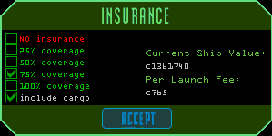

The insurance terminal is available in any TRI station. Civilian pilots may adjust their settings to the level of coverage desired, including no insurance at all. A cargo coverage retainer may be selected, which will stipulate that cargo will also be covered at the chosen rate. However, cargo coverage is not available at rates greater than 75%. This exception was mandated by TRI based on a history of station equipment losses that were viewed as intentional.
A nominal fee is assessed to each pilot upon launch based on the chosen rate and the valuation of the ship equipment (and cargo, if covered). All launches, regardless of departure point and destination, are covered at the set rates, until either changes are made at another TRI station, or a change to flight registry is made that would override the prior choices.

Pilots should be aware of significant changes made to their ship's value either by loading cargo or improving their equipment kit may necessitate an adjustment to the chosen coverage rate to avoid unexpected expenses at the time of departure.